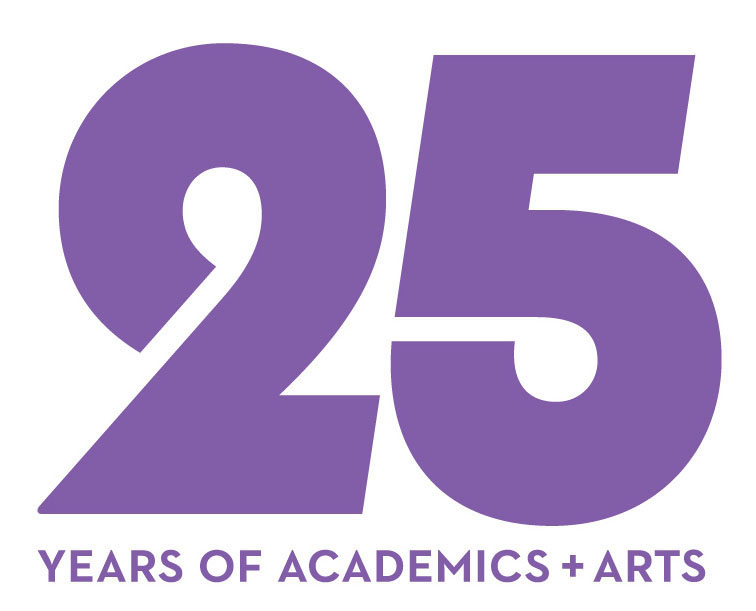
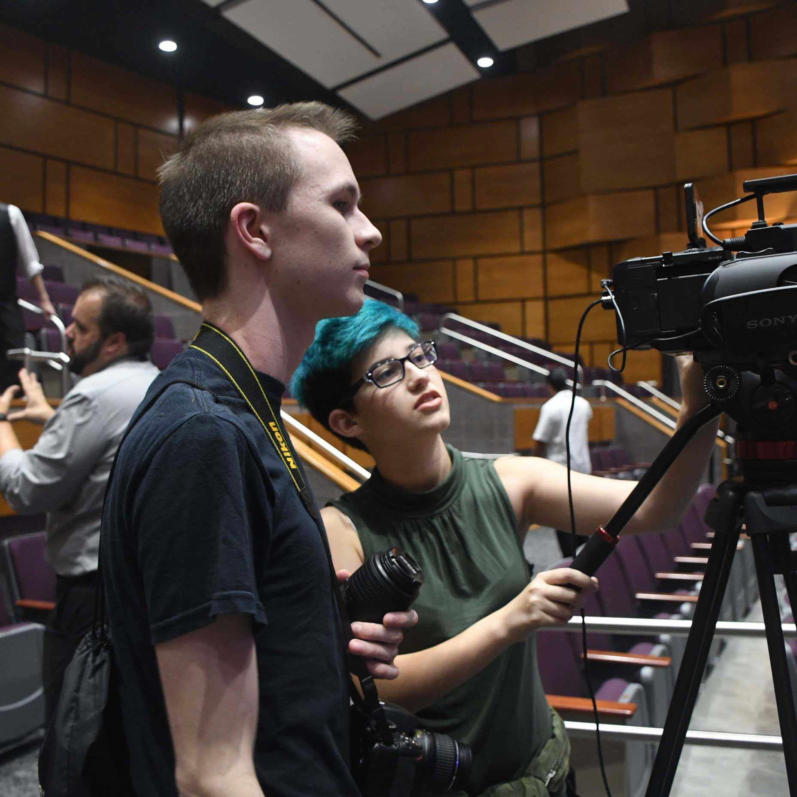
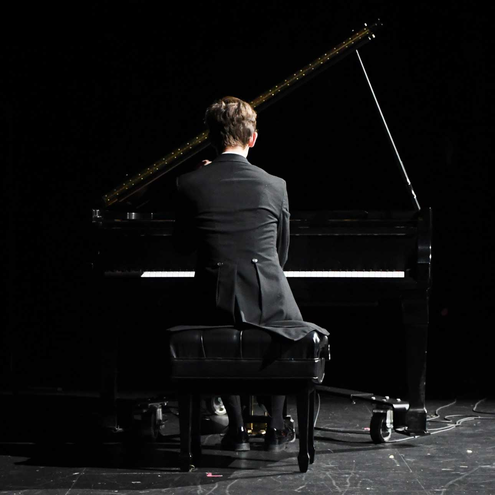
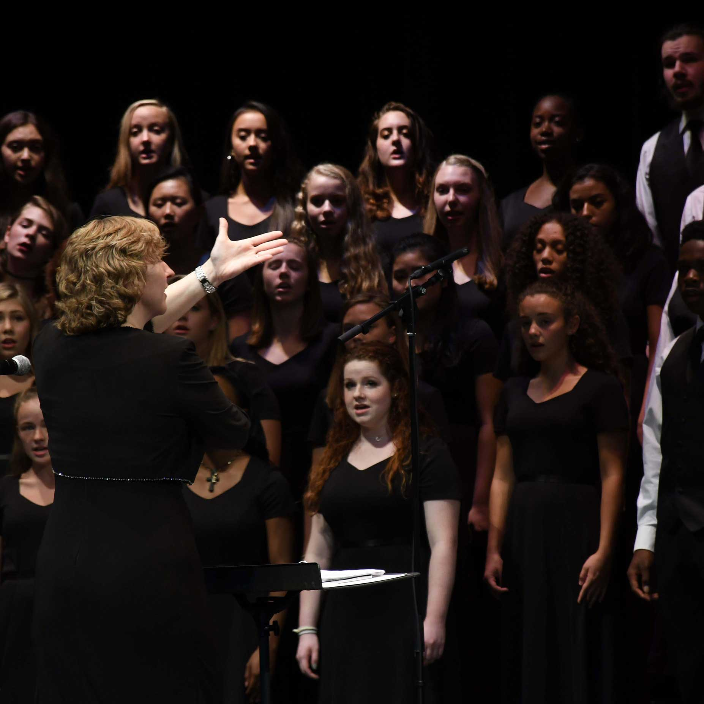
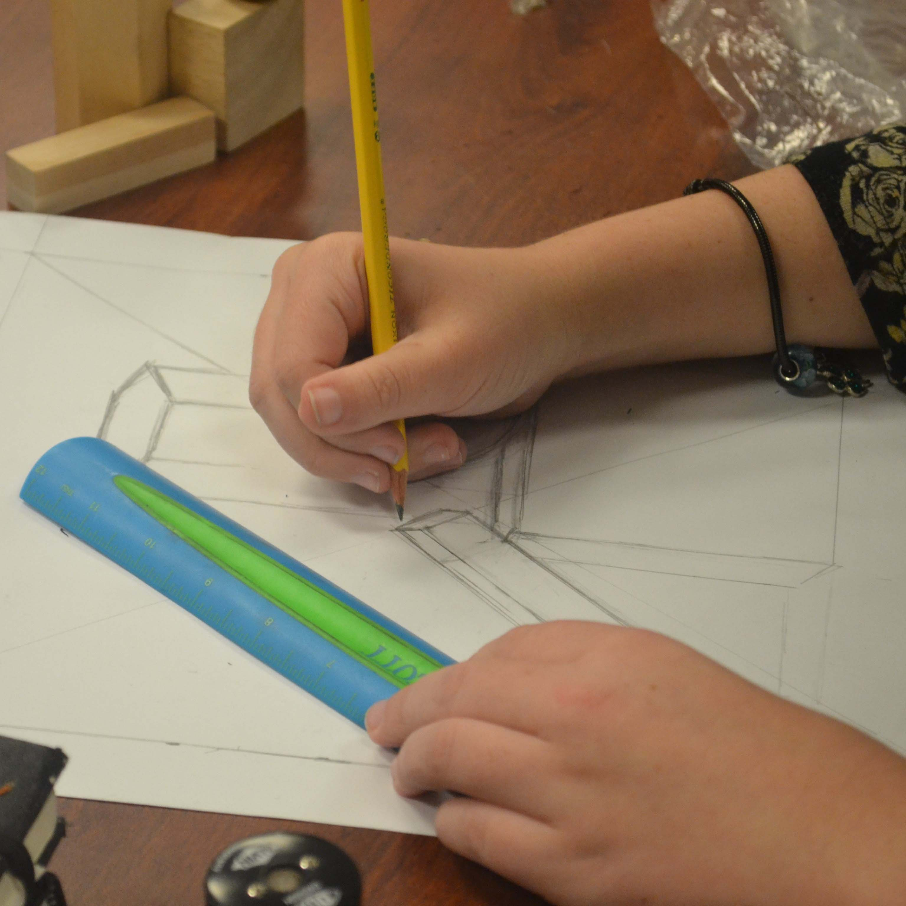
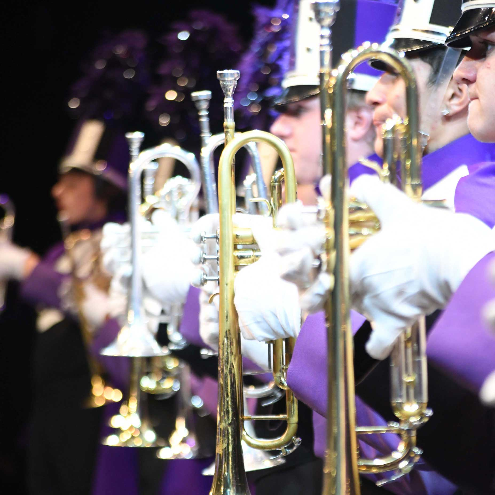
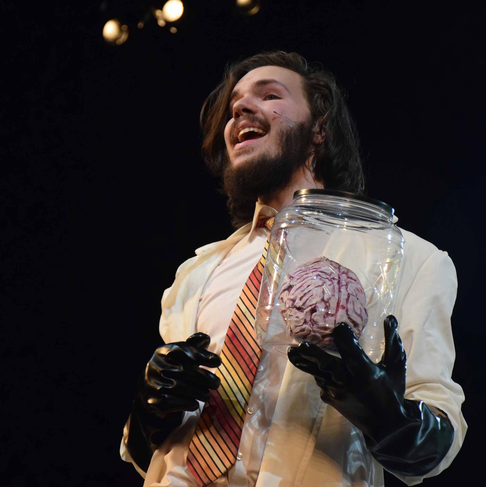
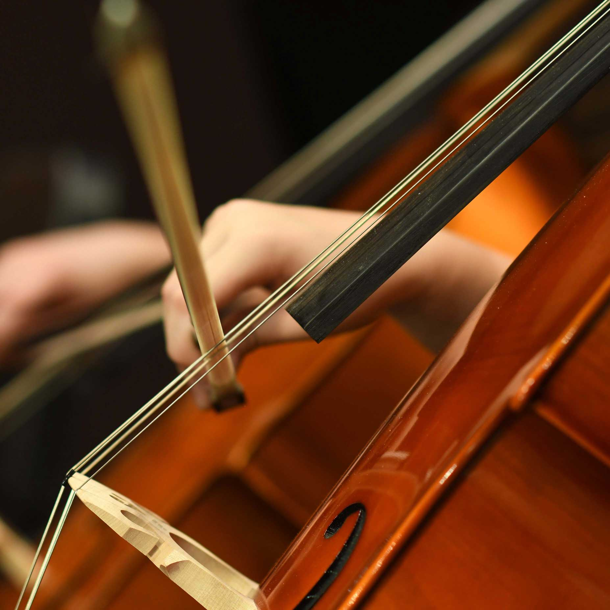
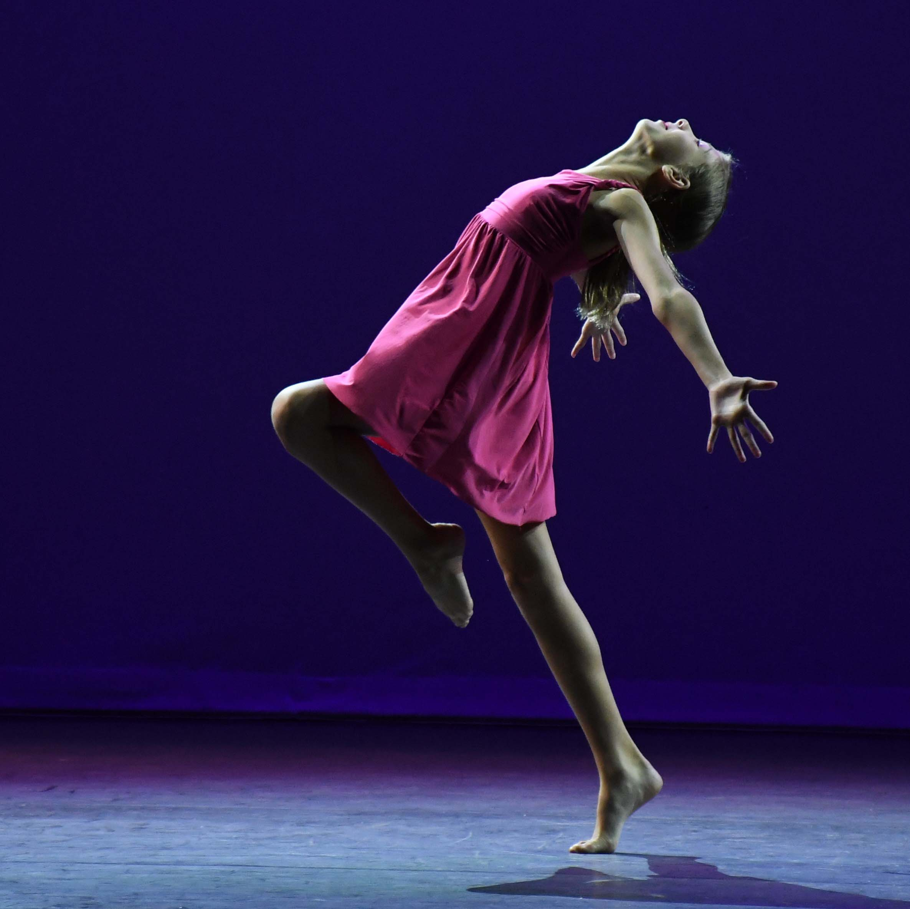
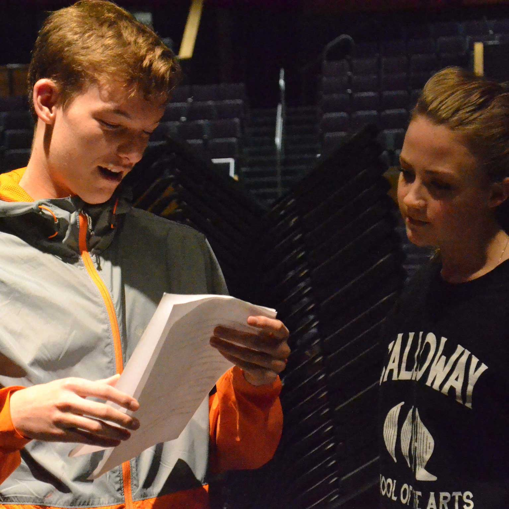

ABOUT
Cab Calloway School of the Arts invites students who demonstrate artistic interest and potential to engage in a rigorous curriculum where arts and academics combine to cultivate the development of independent investigation, critical and creative thinking, and the innovative application of acquired skills. Our graduates will demonstrate a mastery of defined skills that will enable them to be productive, self-directed, lifelong learners, who appreciate and respect diversity. When a study of arts and academics are combined, each informs and enriches the other. At the Cab Calloway School of the Arts, students will receive an exemplary academic program in all required subject areas, and a special curriculum, which will emphasize the creative, performing, and visual arts
Our school is also celebrating 25 years of combining academics and arts, and so we are commemorating our past and our origins. Read all about the journey of our school and building here
Double-click the box to close it.
MAJORS
DIGITAL MEDIA
Students develop the ability to create and synthesize new ideas within the context of creative writing, oratory, photography, cinematography and other emerging technologies. Students use most aspects of the Adobe Creative Suite primarily on iMacs. The Adobe Creative Suite’s encompass: Photoshop, InDesign, Illustrator, After Effects, Premiere Pro. Also covered in various Communication Art’s classes include, Apple’s GarageBand, iMovie, iDVD, and Microsoft Office. A new addition to the Communication Arts Department is the Google apps as they integrate documents, spreadsheets and presentations into the process of interdisciplinary problem-solving projects throughout the year. Students create written, audio-visual and electronic content for publication, and use technology including various computer software and digital cameras.
PIANO
The CCSA Piano Studio is designed to support and steward the study of musicianship through developing piano skills, both as a soloist and, as the opportunity arises, in collaboration with other artists. Curriculum is largely individualized, depending on the goals of each student. Success comes to those students who, on a daily basis, commit themselves to focusing on their music and working on it independently, as well as in small groups, or with individual feedback from the teacher. There are no limitations on what they can learn. The CCSA Piano Studio supports both middle school and high school programs.
VOCAL
Students are taught how to sing in a healthy manner, including techniques for solo and ensemble performances. Emphasis is placed on diction, phrasing, vowel placement, and proper tonal production. Students learn to sing in several different languages that might include Italian, French, German, Latin, and African. Students sing in musical styles appropriate to the Renaissance, Baroque, Classical, Romantic and Contemporary time periods. Students explore basic music theory through sight-reading, ear training, dictation and class discussion. Advanced students study the theory and practice of elementary harmony.
VISUAL
Through a variety of tools, techniques, and processes, students grow to better understand the interplay of different media, styles, and design principles in the creation of their own work. Learning is designed around primary concepts. One of these concepts is visual literacy, the ability to observe and interpret an awareness and appreciation of design. Students will learn to communicate conceptual ideas through use of a visual, symbolic language. Students will achieve the goal of attaining visual literacy through immersion by participation in self and peer critiques and intense research of specific artists of their own choosing. Students explore a variety of experiences that include drawing, painting, ceramics, printmaking, sculpture, fiber and digital art. Historical references are related to the works in progress. Career opportunities in the field of art are explored.
INSTRUMENTAL
Instrumental music students must be studying instruments of the concert band, orchestra (i.e. woodwinds, brass, percussion or strings), or piano. Students focus on individual achievement and development during class time and group dynamics in extracurricular bands and ensembles. Instrumental music students:
- Study solo and ensemble literature in the classical idiom
- Study music theory and music composition
- Sight sing music in treble and bass clefs
- Perform at least one solo composition each year
THEATRE
The Cab Calloway theatre department develops students into artists who are prepared to produce their own work. Our course study explores acting, directing and playwriting while guiding students to develop and lead their own productions beyond the classroom. Students will explore in-depth scene and character analysis while learning to connect to a character’s given circumstances. They will connect to their physical instrument, freeing themselves of body tensions and discovering their natural speaking voice. Students will explore theatre history, philosophy and theory by diving into theatrical texts ranging from classical to contemporary.
STRINGS
Strings classes are offered at Cab for 6th through 12th grade as a major. There is also a non-majors strings class offered to any student in grades 6-8 (at least one year of prior experience on your instrument is recommended). All string students play in three concerts per year. In addition to preparing 5-6 pieces for each concert, string students learn music theory, ear and rhythm training, sight-reading skills, music composition, music history and improvisation. There are three after school orchestras offered to string students. The Red Clay Middle School Orchestra is offered for the intermediate level student. The Red Clay High School Orchestra meets Tuesday evenings 7-8:30 and is for the advanced students in middle school and any high school student. The Cab Calloway Chamber Orchestra is for the very advanced string students and is by audition only.
DANCE
Students learn through movement exploration. They address the development of self-image, social contacts and peer relationships, and begin to examine the social and cultural elements and contexts, and experience expanded cognitive aspects in both perception and creative process. Dance curriculum focuses on training in the disciplines of ballet, jazz, and modern techniques, as well as multicultural dance traditions. Throughout their career at Cab Calloway, students study dance history, psychology of dance, improvisation, choreography, injury prevention, anatomy, physiology, and nutrition/eating disorders.
TECHNICAL THEATRE
The Technical Theatre program at Cab Calloway School of the Arts seeks to educate students in the skills necessary to support all arts programs in their performances. Studies focus on operation of lighting technology, sound technology, scenic design, basic carpentry skills, and stage management. Students are integral parts of the newly renovated theatre at Cab Calloway, providing all of the necessary technical support for every performance in the space; whether those performances are from the school or from outside groups. Students are encouraged to be involved in every aspect of performances, including stage management, design, casting, rehearsals, scenic construction, and more. Although the program is designed to prepare students to pursue technical theatre or design post-graduation, all students are encouraged to participate in the program as it provides an excellent opportunity for growth and appreciation of all arts areas.
Double-click the box to close it.
CTE COURSES
The core component of Cab Calloway's STEM career pathway is its Digital Media program. Digital Media combines the arts and technology to create a fully integrated program, which helps students get a head start in life. Digital Media encompasses a variety of subjects, from photography to web design, and from graphic design to cinematography. "Digital Media Majors encompass a wide variety of skills, everything from: creative writing, capturing images, designing logos, making layouts in print media, designing websites, and making cinematic works of art."
Learn more here
Double-click the box to close it.
STEM CURRICULUM
Cab Calloway School does not just specialize in the arts. In fact, it has some of the strongest STEM programs in the state of Delaware. Students are required to take a set amount of science credits, and then are allowed to extend their knowledge though AP classes. Cab students can also take classes at Charter School of Wilmington, which shares a building with Cab. Charter offers many more advanced science classes, such as Astronomy or Nanotechnology. Cab Calloway's Science Olympiad team is one of the top-ranking teams in the state. The Cab Calloway Math League team meets around once a week throughout the year, and participate in four meets, generally sending many people to states. Cab Calloway has had a lot of success over the past few years with Odyssey of the Mind. Many teams have ended up going to the world competition. These teams are formed by individuals, and then consult with a few teachers in order to get registered.
Learn more here
Double-click the box to close it.